３日目
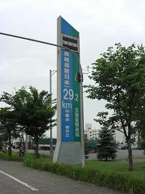 この日は、札幌から富良野を経由して約150キロ離れた旭川をめざします。 その道中にある12号線「直線道路日本一29.2km」の看板
|
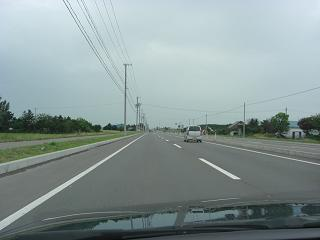 「きっとどこか曲がっているはず、29ｷﾛも直線が続く訳無いだろう。」 なんて思いながら走ること数分・・・見えるのは先の見えない直線道路（笑 本当にこんな道がつづく(*ﾟ0ﾟ)
|
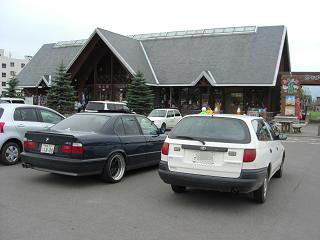 前日に「明日12号線を通るならプチオフでも」とミカミンさんにお声をかけていただいていたので、 お仕事中なのに、駆けつけていただいたミカミンさんと 12号線沿いにある道の駅でプチオフです＾＾/ さらに、翌日に予定していた「日本最北端でのボンネット上げツアー」にも、 ご一緒していただけることになりました＾＾/ |
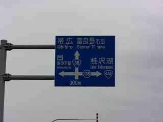 12号線から、38号線に入ると標識に「富良野」の文字が見えてきました。 札幌から富良野まで約110キロ。。 ここまで全て高速道路を使わずに下道での移動です。
|
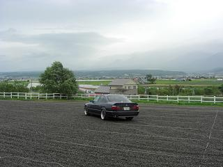 目的地、ファーム富田です。 富良野といえばラベンダー！ ラベンダー見放題ってことでやってきました。 |
|
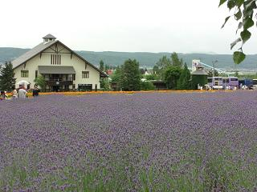 車を降りるとほのかに香るラベンダーの香り この匂い、ちょっと香ってるにはイイけど・・・ しばらく畑の中にいると匂いから臭いへと変わってきました（笑 でも、綺麗でした(*´д｀*) |
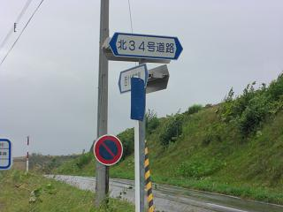 富良野といえば一本道！ ってことで、一本道がありそうなところを走っていると、、 34号道路があったので・・・
|
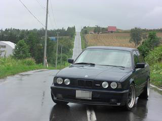 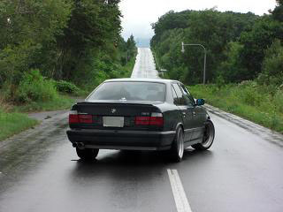 撮ってみました。
|
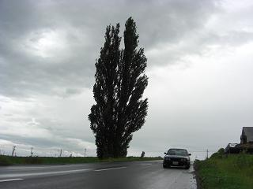 富良野からしばらく走り、美瑛へ。 晴れとは違う、雲り空がイイ感じだったりする（負け惜しみ（笑））
|
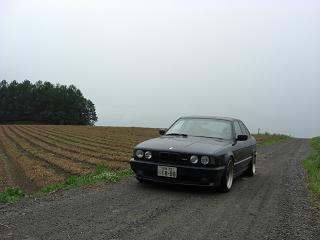 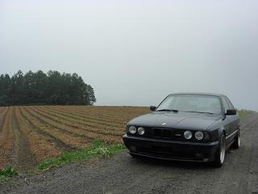 イイ雰囲気だったので、１枚撮ってみました（左の写真） ナンバーを加工して撮ってみました（右の写真） こんな田舎道でナンバーを触ってると、そりゃ誰だって怪しく思うでしょう＾＾； 通る人ほとんどに注視される（笑
|
４日目 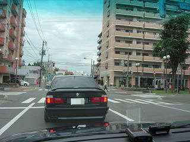 この日は、ミカミンさんと旭川市内で集合し宗谷岬を目指します。 往復500キロの旅です＾＾/
|
|
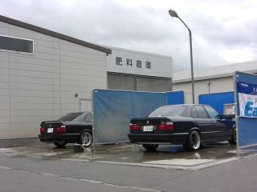 この時点では、天気予報は雨だったんです（笑 でも・・・ 北海道は、虫が多くてすぐに車が汚れてしまいます。。 更に前日の雨が降ったこともあり２台とも汚れていたので洗車(･д･)? |
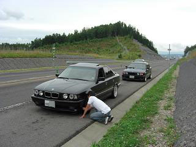 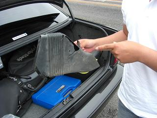 無料の高速道路に乗り快調に走ること数キロ、ミカミン号から停まれの合図が！ こんな気持ちいい道で停まるなんてきっと何か（故障（笑））あったに違いない！ なんて思いながら近寄ると・・・ ブレーキ冷却の、ダクトがタイヤに擦れて。。ダクトには穴が(゜ロ゜) とりあえず、外しても問題ないだろうとの判断で、外してツーリング続行＾＾ この時点でＭゴロー号は快調！ 人の不幸を笑って見てると後に・・・（爆 詳しくはその３で。
|
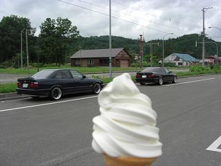 途中、道の駅でソフトクリームをskoyamaさん風に撮ってみたり＾＾/
|
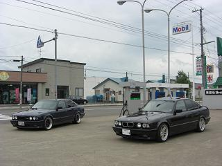 給油したりしながら
|
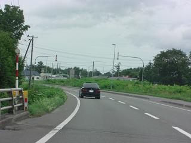 北上します！
|
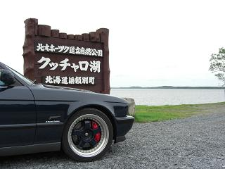 宗谷岬へ向かう途中にあったので、寄ってみましたクッチャロ湖
|
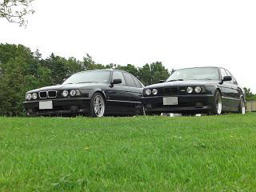 何も無いけどここがまた綺麗な所で＾＾/
|
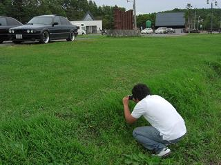 草陰から撮るミカミンさん＾＾ |
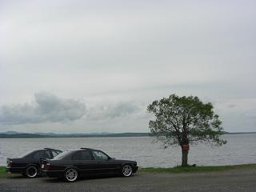 晴れてたらもっと綺麗だっただろうなぁ。。 |
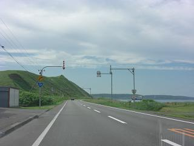 宗谷岬までもう少し！ 北海道の端っこの海岸線を走る。 この頃からＭゴロー号に少し異変が。。
|
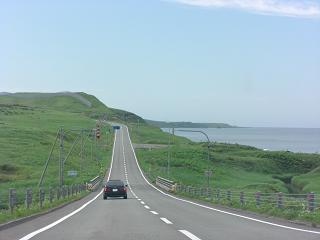 曇っていた空がだんだんと晴れてきました＾＾/ きっと、２人の日ごろの行いが良いからでしょう・・・（笑
|
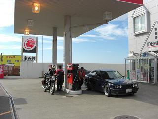 帰り道にガソリンスタンドがほとんど無いので、給油。 最北端のスタンドだったようで、記念にホタテの貝殻？をもらった。
|
| その３へつづく |